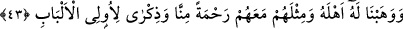

mutasavvife), tekellüf ehlidir (ehl-i tekellüf). Nitekim “tezehhüd” ve “tasavvuf”
kelimelerinde de bu anlam mevcuddur. Zira ümmetin takvâ sâhibi ferdleri böyle
tekellüflerden uzaktırlar.
Bu ifâde, zamanın fâsıklarına Kur’an naslarına aykırı bulunan zikir toplantılarını
yasaklamaktadır. Çünkü bunlar mezkûr fiile ehil ve sâlih kişiler olmuş olsalardı,
Kur’an’ın yukarıdaki emrinin işârî delâleti bunu kendilerine mübah kılardı. Fakat
bunlar, ayaklarını şartlarına riâyet ederek yere vurmaktan oldukça uzaktırlar. Böyle
oldukları için de bu kendilerine kesin olarak yasaklanmıştır.
Şeyh Üftâde (k.s.) der ki: Şeyh Hacı Bayram-ı Velî’nin tarikatında da bizim
tarikatımızda da tevhîd esnâsında raksetmek diye bir şey yoktur. Aksine bizler “Onlar
ayaktayken, otururken ve yanları üzerine yatarken Allah’ı anarlar.” (Âl-i İmrân
3/191) âyeti mûcebince Allah’ı, ayakta ve oturarak zikrederiz, raksetmeyiz.
Şeyh Üftâde ayrıca şöyle der: “Bizim tarikatımızda raks diye bir şey yoktur. Çünkü
raks ve sesler zihne gelebilecek şeyleri uzaklaştırmak için konulmuştur. Oysa bunları
uzaklaştırmada tevhîdden daha etkili bir şey yoktur. Bu bakımdan bizim yol ve
metodumuz, peygamber yoludur. Bizim Peygamberimiz (s.a.) de ‘tevhîd’den başka bir
şey telkin etmiş değildir.
43. Bizden bir rahmet ve olgun akıl sâhipleri için de bir ibret olmak üzere ona
hem âilesini hem de onlarla beraber bir mislini bağışladık.
“Bizden” katımızdan büyük “bir rahmet ve olgun akıl” sağduyu “sâhipleri için de”
başlarına gelen sıkıntılara, Eyyûb gibi sabredip direnmelerini ve başlarına gelenlere
karşı, Allah’a, onun gibi sığınmalarını sağlayacak “bir ibret olmak üzere ona hem
âilesini hem de onlarla beraber bir mislini bağışladık.” Böylece onun gibi güzel bir
âkıbete sâhip olacaklardır.
Bu ifâde, mukadder bir ibâreye ma’tuftur: Bu emri alan Eyyûb o suyla yıkandı ve
ondan içti. Biz de bu sâyede -Enbiyâ 21/84’te de geçtiği üzere- kendisindeki bütün dert
ve sıkıntıları giderdik. Âilesini ona armağan ettik, çocuklarını diriltip yaşattık ki
kendisinin onüç tane çocuğu vardı.
Hasan Basrî’nin rivâyetine göre, Allah Teâlâ onları helâk ettikten sonra tekrar
diriltmiştir. Yukarıda zikredildiği üzere onlar, İblis’in üzerlerine binâyı yıkmasıyla
ölmüşlerdi.
Sâib der ki:
Maksadının elden kaçmasına fazla üzülme,
Çünkü felek (kader) yıldızı götürür, güneşi getirir.